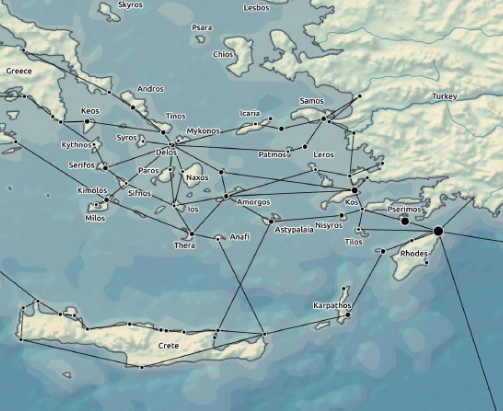
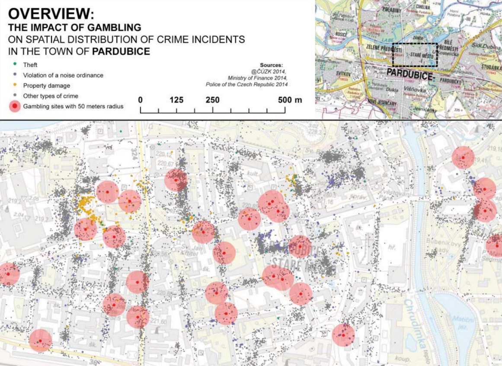
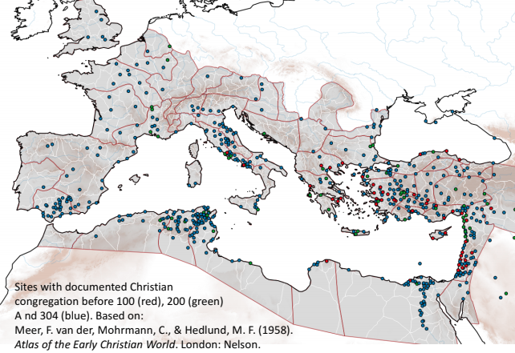
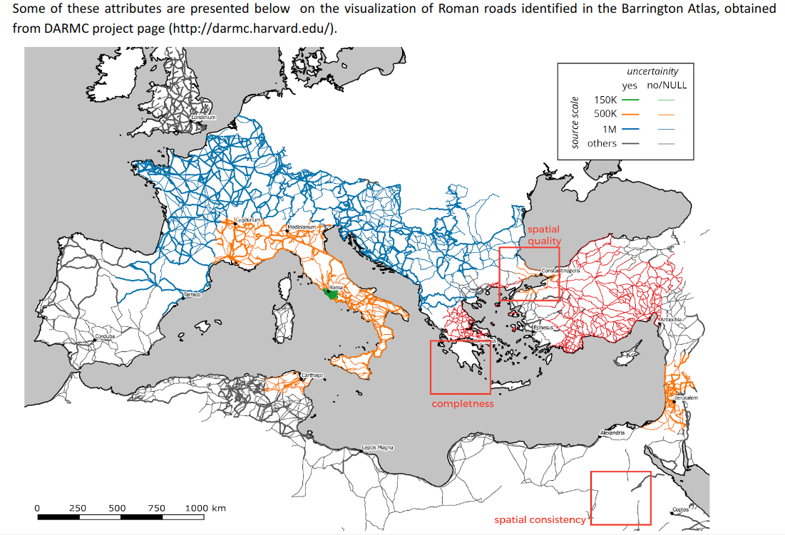

About
Name
Adam Mertel
Nationality
Slovak
Date of Birth
26.08.1988
Position
GIS expert, Web technologies, Map design
Current Occupation
Brno, Wien, Trenčín
Education
2009 - 2012
Bachelor degree
Geographical Cartography and Geoinformatics
Masaryk University, Brno
2012 - 20014
Master degree
Geographical Cartography and Geoinformatics
Masaryk University, Brno
2014 -
Phd degree
Cartography, Geoinformatics and Remote Sensing
Masaryk University, Brno
2017 - 2018
Praxis
Department of Geography and Regional Research
University of Vienna
Work Experience
2014 - 2015
Programmer
Transport Research Center, Brno
Programming internal information system
2017 -
Programmer, researcher
Various projects concerning web cartography
2018 -
GIS specialist, researcher
Department for the Study of Religions, Masaryk University
2018 -
Consultant, programmer, data analyst
Czech Radio
Development of analytical platform
Technical Skills
Web GIS and visualisation
d3, leaflet, canvas(konva), turf, threejs
Web programming
js, react, node, CSS frameworks
Databases
Postgre, mongo, rethink, mysql
Other technologies
QGIS, python, R, ArcGIS, vector graphics
Selected Research Publications
Ptolemaic military operations were a dominant factor in the spread of Egyptian cults across the early Hellenistic Aegean
Sea

Early in the Ptolemaic era, Egyptian cults, particularly those of Isis and Sarapis, spread
successfully to ports across the ancient Aegean Sea. Leading researchers in the field claim that the
spread of these cults was influenced by multiple factors, ones that were mainly economic or political
in character. However, the question of which factors had more weight or impact than others in the process
of the early spread of Egyptian cults has not yet been answered in academic discussion. This could be
related to the fact that the issue of the spread of religious innovations in the ancient Mediterranean
has been addressed mainly by established historiographical methods such as the collection and critical
analysis of archaeological and literary sources. Hypotheses and conclusions derived from these methods
are, however, often unable to reflect the complexity of historical processes. A possible solution can
be found in supplementing this established methodological apparatus by formalized methods, e.g. the coding
of relevant datasets, statistics, geospatial modeling, and network analysis. To be able to compare the
possible impacts of different factors on the spread of Egyptian cults in the Aegean Sea region, we 1)
constructed a model of the ancient maritime transportation network as a platform for quantitative analysis,
2) transformed selected factors of possible influence into georeferenced parameters of the network, and
3) defined a mathematical model that allowed us to determine which parameters of the network explain
the spatial dissemination of archaeological evidence connected to Egyptian cults. The results suggest
that the most significant correlation is between the placement of Ptolemaic garrisons and the distribution
of Egyptian temples and artefacts in the early Hellenistic Aegean Sea region. The interpretation would
be that Egyptian military forces potentially played a significant role in the spread of Egyptian cults.
Spatial predictive modeling of prehistoric sites in the Bohemian-Moravian Highlands
based on graph similarity analysis
Open Geosciences

This paper presented a new method for identifying promising areas for archaeological research.
The method is based on graph analysis that iteratively compares and manipulates Hamming distances between
graphs of input geographical parameters and graphs of human activity data in various historical periods.
The weights learned from the comparison was used to build a prediction model to estimate the potential
presence of an archaeological site of a certain time period in a given cadaster. This was applied in
the Bohemian Moravian Highlands region based on the most complete archaeological dataset of the area.
Resulting maps were analyzed from the archaeological and historical point of view to test against the
existing knowledge of prehistoric population movement in the region. Overall, the method proved to overcome
problems such as fragmentary inputs and is a good candidate for application in smaller and geographically
diverse research areas. The aim of this work was to contribute to the methodology of the prediction of
historical human activity, to facilitate greater comprehension of past local settlement dynamics, and
to possibly ease the protection of cultural heritage.
Visualization and spatial analysis of police open data as a part of community policing
in the city of Pardubice (Czech Republic)
Annals of GIS

Different types of spatial analyses and visualizations can be used in the police practice
for investigation, crime prediction, and planning of police forces. The public availability of crime
data is one of the often discussed issues for the police, general public and academia. The efforts to
open police data are rooted in the philosophy of the so-called ‘community policing’. In this article,
we demonstrate the possibilities of spatial analysis and cartographic visualization of open crime data.
We provide two use cases based on the data gathered by the municipal police in Pardubice, Czech Republic.
We investigate the impact of gambling sites on crime offence intensity and found that gambling sites
considerably influence their surroundings within 100 m. The other use case is focused on traffic offences
caused by cyclists. We extracted hot spots of these offences and tried to identify their causation, since
the police should not only carry out repressive measures, but also strive to eliminate the causes (e.g.
add cycle lanes, bike paths, underpasses or overpasses). Different types of cartographic visualization
have been designed and discussed for both use cases. The advantages, limitations and future development
of the described concepts are commented on in the conclusion.
Agent-Based Modelling And Simulation For The Geospatial Network Model Of The Roman
World
International Symposium on Grids and Clouds (ISGC) 2016

In this paper we present a computational environment called LINUM for agent-based modelling,
based on a geospatial transport model similar to the one implemented in ORBIS, The Stanford Geospatial
Network Model of the Roman World. We provide the implementation of the transport model, and tools for
creating and analyzing agent-based models around it. We also provide webbased visualization of the results
of the simulation, and enable the user to generate time-collapsed static network for further analysis
by the means of complex networks measures. The functionality of the environment is demonstrated on a
model of diffusion process on the transport network.
GIS For Religious Studies
6th
INTERNATIONAL CONFERENCE ON CARTOGRAPHY AND GIS

Abbreviation GIS is an equivalent for both science and technology and comes with its own
approaches and theories for processing and evaluating various data. Also therefore GIS technologies are
currently penetrating various fields of science. This contribution is focused on specific issues connected
with application in studies of historical religions within GEHIR project (A Generative Historiography
of the Ancient Mediterranean), which is focused mainly on the ancient Mediterranean. Selected issues
as nature and properties of historical spatial data, environmental modelling in religious studies etc.,
will be demonstrated on example of case study dealing with the cult of Isis. Results show potential of
GIS for purposes of research studies in the field of the Religious studies.